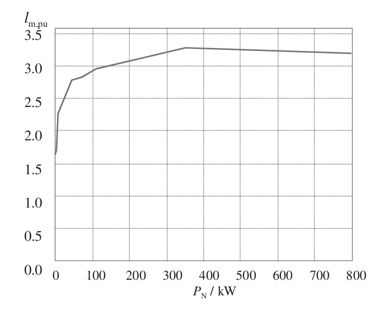
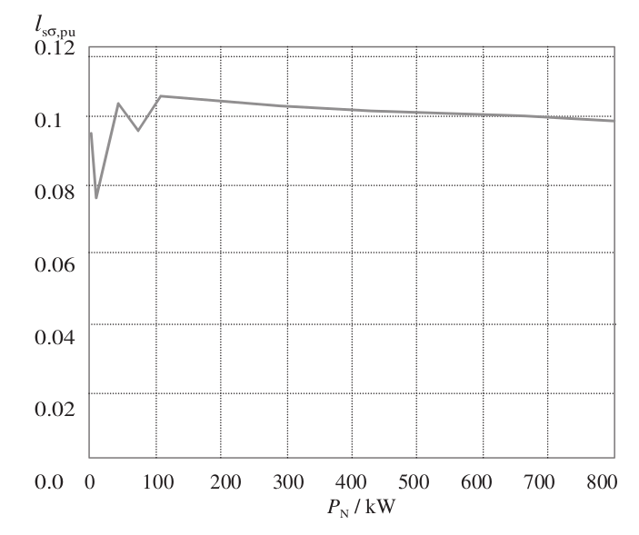

class: center, middle # EE-564 Design of Electrical Machines ## Ozan Keysan [ozan.keysan.me](http://ozan.keysan.me) Office: EA-304 <span class="meta">•</span> Tel: 210 2319 --- # Magnetizing Current <img src="https://raw.githubusercontent.com/ozank/ozank.github.io/master/presentations/images/no_load_magnetizing_curve.png" alt="Drawing" style="width: 600px;"/> ## Can be linearized by Carter's coefficient (use \\(\delta_e\\)) --- # Magnetizing Inductance -- ## What is inductance? --- # Magnetizing Inductance ## \\(\Phi\_{pole} = \int B dS\\) -- \\(=\dfrac{2}{\pi}\hat{B}\tau\_{pole}l'\\) ### if B is sinusoidal --- # Flux Lines vs Torque <img src="https://raw.githubusercontent.com/ozank/ozank.github.io/master/presentations/images/flux_vs_torque.png" alt="Drawing" style="width: 750px;"/> --- # Magnetizing Inductance vs Torque <img src="https://raw.githubusercontent.com/ozank/ozank.github.io/master/presentations/images/inductance_vs_torque.png" alt="Drawing" style="width: 750px;"/> --- # Magnetizing Inductance  #### Magnetizing inductance variation of a 4-pole machine --- # Losses in Magnetic Circuits -- - ## Hysteresis Losses -- - ## Eddy Current Losses --- # Hysteresis Losses ## Steinmetz's [Equation](http://web.eecs.utk.edu/~dcostine/ECE482/Spring2015/materials/magnetics/CoreLossTechniques.pdf) -- ## \\(P\_{hy}= \eta V f B\_{max}^k\\) - ### \\(f\\): Frequency - ### \\(V\\): Volume - ### \\(B\_{max}\\): Maximum flux density - ### \\(\eta\\),\\(k\\): Constants depending on the material properties. k is typically 1.6 (or between 1.5 and 2.5) --- # Eddy Current Losses -- ### [Catalogues](http://www.sura.se/Sura/hp_products.nsf/vOpendocument/03A8B2433FAE16C4C1256AA8002280E6/$FILE/NO-08.pdf) usually give combined eddy and hysteresis losses --- # Magnetic Losses ## Beware of harmonics (especially with an inverter) ### With Sinusoidal Supply <img src="https://raw.githubusercontent.com/ozank/ozank.github.io/master/presentations/images/loss_sinusoidal.png" alt="Drawing" style="width: 400px;"/> --- # Magnetic Losses ## Beware of harmonics (especially with an inverter) ### With Inverter <img src="https://raw.githubusercontent.com/ozank/ozank.github.io/master/presentations/images/loss_inverter.png" alt="Drawing" style="width: 400px;"/> --- # Leakage Flux -- ## Flux that does not cross the airgap -- ## Flux crosses the airgap but does not link the winding --- # Leakage Flux ## Flux that does not cross the airgap -- - ### Pole Leakage Flux -- - ### Slot Leakage Flux -- - ### Tooth Tip Leakage Flux -- - ### End Winding (Overhang) Leakage Flux --- # Pole Leakage Flux <img src="./images/pole_leakage.png" alt="Drawing" style="width: 700px;"/> --- # Slot-Tooth Tip Leakage Flux <img src="./images/slot_leakage.png" alt="Drawing" style="width: 700px;"/> --- # End Winding Leakage Flux <img src="./images/end_winding_leakage.png" alt="Drawing" style="width: 600px;"/> --- # End Winding Leakage Flux <img src="./images/end_winding_leakage2.png" alt="Drawing" style="width: 600px;"/> --- # Slot Shapes <img src="./images/slot_leakage_shapes.png" alt="Drawing" style="width: 700px;"/> --- # Leakage Flux ## Flux crosses the airgap but does not link the winding -- - ### Zig-Zag Leakage -- - ### Skewing Leakage --- # Leakage Inductance  #### Leakage inductance variation of a 4-pole machine --- # Resistances -- ## DC Resistance ### \\(R\_{dc}= \dfrac{l}{\sigma A}\\) --- # AC Resistance ### \\(k\_{Ru}=\dfrac{R\_{AC}}{R\_{DC}}\\) <img src="https://raw.githubusercontent.com/ozank/ozank.github.io/master/presentations/images/coil.png" alt="Drawing" style="width: 300px;"/> --- ## You can download this presentation from: [keysan.me/ee564](http://keysan.me/ee564)